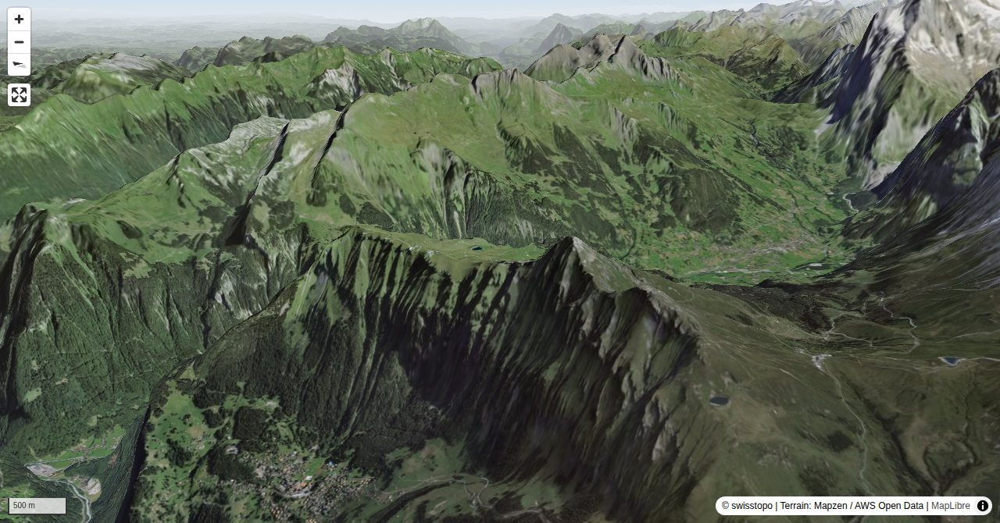

Tschuggen is beleaguered by ski and chair lifts, and the busy hiking trail between Männlichen and Kleine Scheidegg passes at its foot, yet on Tschuggen one is mostly all alone in the world, despite the faint path on parts of the south-east ridge. Thanks to the lifts and trains Tschuggen is easy to reach. Those who love longer hikes will discover some natural gems albeit the seemingly overdeveloped region. And those who prefer difficulty, will find even alpine terrain to climb on. Besides, Tschuggen can be easily combined with a tour to Lauberhorn.
Der Männlichen ist sowohl von Wengen (Luftseilbahn) als auch von Grindelwald (Gondelbahn) erreichbar.
Quick Facts
| Summit elevation | 2521 m |
|---|---|
| Difficulty | SAC T4- Check the route notes below for terrain and commitment level. Guide |
| Trailhead | Männlichen, Bergstation |
| Distance | 6.0 km (out-and-back) |
| Total ascent | ~380 m |
| Elevation range | 2061-2520 m |
| Route sources | SAC Route Portal |
Photos


Route Map & Elevation
i
i
sac_scale (precise T1–T6) with
swissTLM3D Wanderwegart
fallback where OSM is silent (coarser T2/T3 and T4+ buckets).
Coverage: OSM 72.6% · swisstopo 0.0% · unknown 26.1%.Elevations computed from the inlined GPX track (SwissTopo height API).
Loading forecast…
3D Terrain View

Route Details
South-east ridge
- TODO: Step 1 description.
- TODO: Step 2 description.
Terrain & safety
On parts of the south-east ridge there is a faint path. In addition, you encounter pathless grass slopes and on the ridge a short, slightly exposed rocky passage with slabs, where you must use your hands. Precarious when wet. Those who love even more difficulty, will find a T5 route on the south ridge.
Source: SAC Route Portal
Getting There & Back
Start: Männlichen, Bergstation (2220 m)
Directions from to Männlichen, Bergstation
End: Kleine Scheidegg (2061 m)
Directions from Kleine Scheidegg back to
Cable car to Männlichen, Bergstation.
Field Reference
| Trailhead | Männlichen, Bergstation | 46.61130, 7.94290 |
|---|---|---|
| Summit | Tschuggen Be (2521 m) | 46.60021, 7.94954 |
Coordinates are WGS84 decimal degrees (lat, lon). Emergency: 112 (general) or 1414 (Rega air rescue). Page URL: